A Review of the Königsfelden Online Edition
Table of Contents
Abstract
This review deals with the digital edition “Die Urkunden und Akten des Klosters und des Oberamts Königsfelden 1308–1662“ (Charters and Records of Königsfelden (1308–1662)), which was carried out by the Department of History of the University of Zurich between 2017 and 2020. The edition project provides access to more than 1500 charters and records. The aim of this review is to discuss the project context, the web interface, the data and the quality of the edition. A particular focus will be given to the FAIR data principles. Overall, Königsfelden Online is a successful implementation of a digital edition that provides a coherent collection of structured documents for further research.
Introduction
The digital edition of the charters and records of the Königsfelden Monastery and the Oberamt Königsfelden from the years 1308–1662 (https://www.koenigsfelden.uzh.ch) is the achievement of the Historical Seminar of the University of Zurich and offers insights into a wide range of topics: from social issues of the urban elites and the service nobility to aristocratic history and aspects of economic and women's history. It should be noted at the outset that the edition discussed here deals with a fully annotated corpus of historical sources. The edition created from this material not only provides access to these historical sources and their metadata via collections, but also a full-text search option, indices, a map for locating documents, and experimental visualizations. Moreover, users can access digital facsimiles of the source material, transcriptions, annotated text, including diplomatic annotations such as abbreviations, and annotations of named entities like persons, families, organizations, places, and their historical context. For the annotation of the text, the project used XML and followed the Guidelines of the Text Encoding Initiative P5 (TEI). At the time of the review, the database contained 1557 documents.
This review focuses on the following subjects: The first section provides an overview of the topic, objectives, methods, content, and modelling of the edition. The second section addresses the publication and presentation, including technical aspects, as well as the user interface of the collection, the search options, and the edition views. After a particular focus on the FAIR data principles, the review concludes with a brief discussion of the experimental visualization that the digital edition additionally provides.
Scope of the edition
Under the direction of Prof. Simon Teuscher, University of Zurich, and in collaboration with the State Archives of the Canton of Aargau and the Swiss Legal Sources Foundation, the project was carried out between 2017–2020 as part of the National Fund project Edition der Urkunden und Akten des Klosters Königsfelden (Infrastructure: Editions, 10FE15_157907). In addition to the funding from the Swiss National Science Foundation, the project was supported by a contribution from the Lotteriefonds of the Canton of Aargau. Originally, the project was initiated by Dr. Tobias Hodel, who was in charge until October 2019, as well as Dr. Claudia Moddelmog and Prof. Simon Teuscher. After that, Dr. Colette Halter-Pernet took over the lead until the end of the project. In addition, 10 staff members were involved in the project in various employment relationships and work areas.
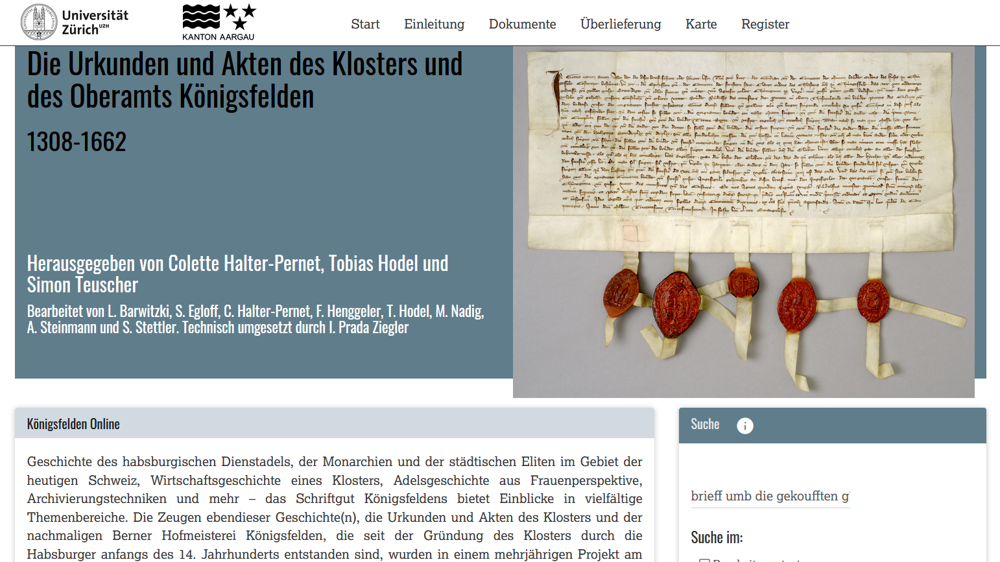 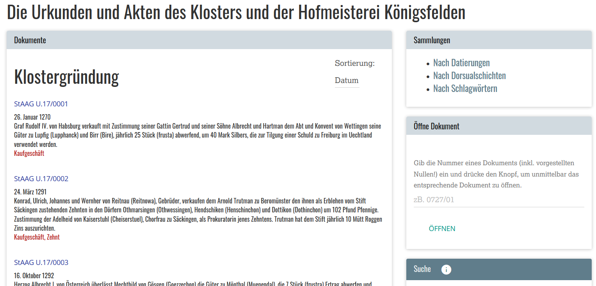
Selection and Content
Two projects were carried out in advance: The project Königsfelden und sein Adel. Annäherungen an eine neue Sozialgeschichte (SNF Projekt 2012–2016) and the book project Königsfelden. Königsmord, Kloster, Klinik (2010–2012). Both projects were – according to their abstracts and publication lists – essential for the realization of the digital edition. The knowledge gained in the context of these projects forms the basis for the classification of the sources provided with regard to the research questions. Another central preliminary work is the doctoral thesis Schriftordnungen im Wandel. Produktions-, Gebrauchs- und Aufbewahrungspraktiken von klösterlichem Schriftgut in Königsfelden (1300–1600) by Hodel (2020), as it is particularly relevant for the “Dorsualnotizen”2, which will be dealt with later.
According to the project description, the reviewed project comprises a so-called “Bestandesedition”3. It consists of digitized facsimiles as well as transcribed and annotated texts of historical sources from the archive collection Urkunden und Akten des Oberamtes Königsfelden 1314–1797 of the Aargau State Archives.4 These collections are edited according to the provenance principle, i. e. the organization of the documents is based on their origin. The annotations refer to named entities such as persons, organizations and places and at the level of textual structure to the normalization of abbreviations, additions or comments. The collection, which was accumulated over a period of four years, comprises about 1,000 individual sheets and three edited cartularies (“Kopialbücher”).
To enable a quick introduction to the material, the project description outlines those parts of the collection that are relevant to specific research areas. The following research areas are mentioned explicitly: Research on monastic communities, on the history of religious orders, on late medieval economy (e. g. on court and tithe administration), on local housekeeping, on written and oral administrative practices, on institutionalizations and systematization of rights, on gender history, on questions of Reformation history, on church and city history, on architectural history, as well as archaeology and art history, and on the Swiss “nobility” (e. g. on the Habsburg service nobility or on the “bourgeois” elites of the cities).
Documentation
All in all, the edition is well documented. The detailed project description includes the project context, the scope of the material, and editorial guidelines. A detailed documentation of the technical implementation and the workflows for the collecting of the data is, however, missing. On the Zenodo5 page related to the project, the scope of the digital data is specified, but the workflows of the data acquisition or the modelling decisions are not documented.
Mission
Since the edition calls itself a “Bestandesedition”, its primary intention is to serve as an information system providing access to historical sources. As far as this purpose is concerned, the edition keeps its promise. The three main objectives of the edition are:
- To provide the scientific community with a comprehensive corpus of historical sources, taking into account digital methods for further processing of the data.
- The preparation and annotation of the so-called “Dorsualnotizen”, which are located on the back of the original documents. These notes, consisting of signatures, date, notations or brief remarks, allow tracing the origin, purpose, location, and organization of the documents. This type of information offers new insights into the study of medieval and early modern written and administrative culture (cf. for more details: Hodel 2020, 109–170).
- A contribution to the development and implementation of digital editions in general.
Method and Representation of documents and texts
As far as categories of information are concerned, the edition focuses on “Regesten” (short summaries), named entities, the description of the material as well as editorial annotation for a better understanding of the content, such as additions, loss, or deletion of text. This edition is thus document-focused. The aim of the edition is to make the documents findable and to serve as a working basis for further – but not exclusively historical – research.
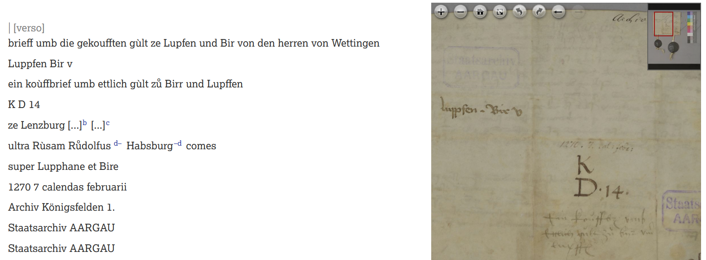
Modelling
There is a detailed description of transcription guidelines and
annotation practices. For the transcription8 as well as for the dating9 the edition project applies the guidelines of the Swiss Legal Source
Foundation (SSRQ). For both areas of application, the project offers a
recommendation (but not a TEI customization) with regards to the implementation in
TEI. Deviations from SSRQ and the specific features for “Dorsualnotizen” are noted
separately.10 Thus, primarily, the edition is based on the TEI Guidelines. The basic
structure of the TEI documents in the edition consists of the facsimile and its
zones to express regions on the digital facsimiles and the annotated text areas.
The textual body is represented using <p> and
<lb> elements. The <msDesc> element,
moreover, contains the most important metadata.
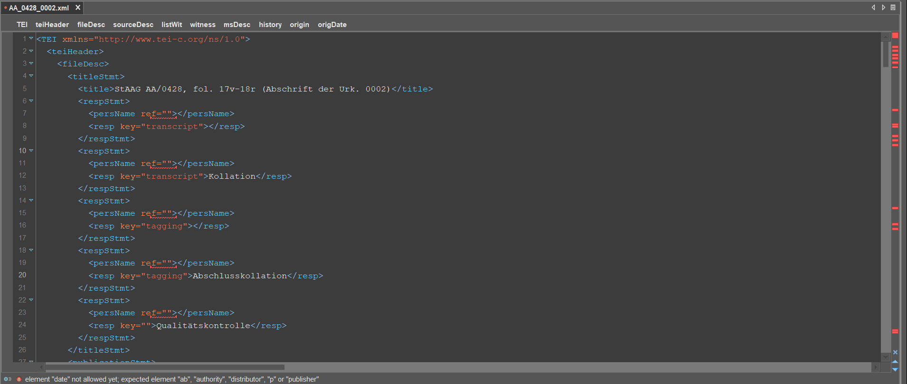
After examining three TEI documents11, the following minor errors that lead to invalid TEI documents have been identified. Many of these problems seem to be due to sloppy implementation but are mostly minor bugs.
- Empty attributes
@ref(ref=""). - Invalid
<publicationStmt>and<editorialDecl>. Moreover, the<publicationStmt>element seems to lack information. - Empty elements like
<taxonomy>,<listPerson>,<listOrg>, or<listPlace>. - Invalid use of the attributes
@widthand@heightas the unit of measurement, like “cm”, is missing to match the regular expression. - Improper usage of the attribute
@type(type="marginal") in<p>elements. - Invalid usage of the attribute
@agentin<damage agent="faded ink">, as attribute values do not allow spaces. - Also, the element
<comment>is used incorrectly.
In addition to these non-TEI compliant implementations, the following
decision concerning the text model are worth discussing as well: Annotating the
“Dorsualnotizen” is essential for the project. It seems to me, however, that the
usage of the attribute @rend does not fit. It is used like:
<p facs="#facs_2_region_1533022656524_73"
rend="dorsual_22_sigle">. The TEI guidelines define
@rend as follows: “indicates how the element in question was
rendered or represented in the source text”.12 So, in my opinion, the attribute
@rend should be used to express the representation of the text,
like italic, bold, or dotted. ‘Knowing’ that the text on the back of a document is
a “Dorsualnotiz” according to a certain categorization, as it is used for the
search functionality, is not covered within the scope of @rend.
Therefore, the attribute @ana would be a better fit.
Documents within Monasterium.org may represent an alternative or comparable use of XML/TEI for annotating these types of documents (cf. Roland 2020). The given example does not contain an annotated text, but rich metadata about the document, which are especially important to implement a front end with different search functions.
Publication and presentation
Technical infrastructure
Since the technical implementation is poorly documented, it is not clear whether the mention of eXistSolutions GmbH refers only to the usage of eXist-db13, or if they also carried out the implementation. The hosting and maintenance of the eXist database is not further specified. The long-term archiving of the data is – reasonably – handled by Zenodo.
Browse, Search and Index
Searching and browsing are essential functionalities of a platform on which sources are to be found for research purposes. And they also play an important role in the edition. Therefore, the Königsfelden online edition offers four points of access: Collections, Search, Index and Map.
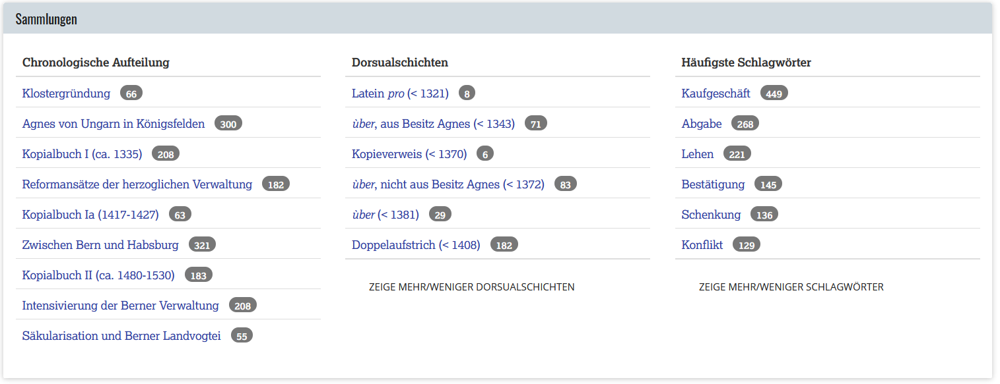
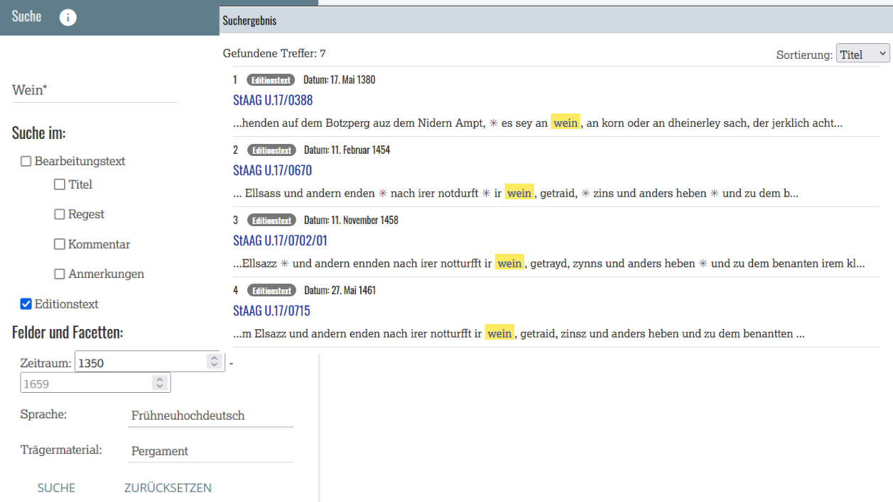
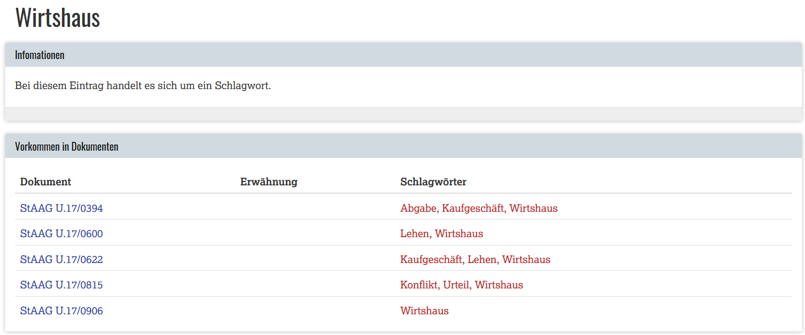
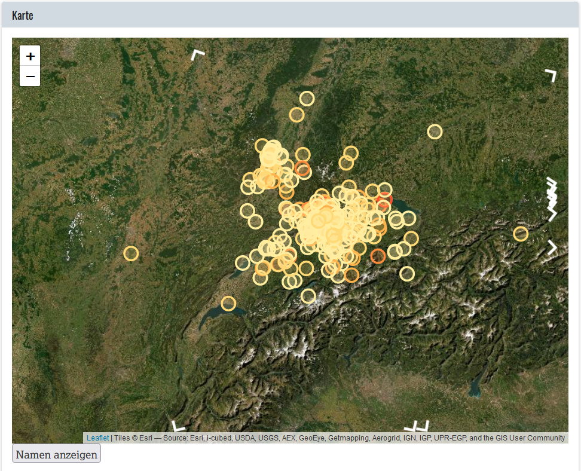
Interface and Usability
The web front end is implemented using Bootstrap 3 and jQuery. Responsiveness of the webpage is given. Functionalities like the facsimile viewer are hidden in the mobile view, which represents a pragmatic solution.
A major drawback of the website are the loading times. The loading of certain pages and search queries takes quite a long time. For example, when clicking on the “Documents” button in the navigation to view all documents, it takes about 15 seconds for the page to load. Even if you click on the pagination, you will encounter slow processing, because it loads all the 60 documents until the next action can be performed. The same loading issue arises with search queries, although an online edition, being a special type of web resource, should allow users multiple query functions to search for specific documents or explore the collection. The loading time might severely lower the users’ motivation and might edge the threshold of the users’ patience.
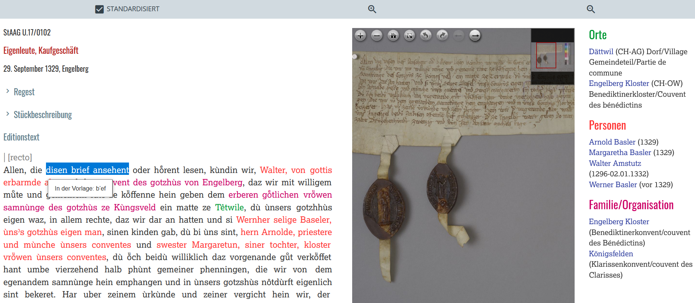
Accessibility is a distinct field of web development that also deals with barrier-free access to web content. In order to optimize the accessibility of a website, the web content needs to provide valid data, for example in terms of HTML5 validity, which in turn has an impact on whether your web content will be discovered by search engines. The accessibility of web pages can be tested manually or by using tools, such as the WAVE Web Accessibility Evaluation Tool14 or the W3C HTML5 Validator15.
When validating the web page of the Königsfelden edition with WAVE,
minor errors in the HTML code become visible. It shows that the @alt
and @label attributes are missing, and that there is more than one
<main> section. Especially @alt and
@label are important attributes if a page is to be read by a
screen reader. These are minor errors that do not impede the functionality but
still limit accessibility and do not represent good practice. Usually, the funding
agency and/or the institution hosting the website has/have their own
specifications that have to be considered. For more details on the accessibility
of web pages, I can highly recommend the blog post by Stanley (2018).
When exploring the edition, another restriction must be taken into consideration: The entire digital edition is only available in German. Since the majority of the sources is in German, the user interface is also adapted to German speakers, which is legitimate by all means. Nevertheless, an abstract in English could possibly open up access to other groups as well.
FAIR
The FAIR16 data principles create a reference framework that improves the findability, accessibility, interoperability, and reusability of data (Wilkinson 2016). In its origin, it refers primarily to the data itself, but in this context, it also covers the edition as a whole. In the case of this review, it concerns the XML/TEI files, which are stored separately from the edition on Zenodo. The following aspects are discussed in detail with respect to the FAIR criteria.
Findability
By findable we mean whether a data set can be easily found by both humans and machines. It includes four sub-goals. The first refers to assigning globally unique and persistent identifiers to the data. Each document has a citation suggestion that looks like this: “Digitale Edition Königsfelden, URL: <www.koenigsfelden.uzh.ch/exist/apps/ssrq/docs/U-17_0001.xml>, Stand: 7.8.2022.” It contains a URL that uniquely identifies each document. However, it cannot be concluded whether the URL is a persistent identifier. Instead, it shows that eXist-db is addressed directly. On Zenodo, there is a DOI that refers to the entire data dump: 10.5281/zenodo.5179361.
Secondly, sufficient metadata, that allows contextualizing the
documents, can be found on the Zenodo webpage and also on the edition webpage. For
each individual TEI document, this is only partially the case. In the TEIs one can
only find metadata about the actors involved, the title of the edition, the
publication date, descriptive metadata of the document contained by
<msDesc>, and the transcription and annotation guidelines.
Other necessary metadata about the individual object, rights or publication can
only be found on the Zenodo webpage. The criteria are thus satisfied to a limited
extent. Furthermore, there is no identifier or URL that establishes a link between
the individual document and the edition. This is only possible via the signature,
such as “StAAG U.17/0887b”. The shelfmark is used as ID, as indicated in the URL
of the web representation of the document17, where, in terms of URL consistency, characters have to be replaced. Using
“0887b”, one can find the object on the page via the “Open Document” function.
Overall, from my point of view, in this regard the edition is not complying with
the FAIR data principle, that requires metadata to clearly and explicitly include
the identifier of the data they describe. Whereas the edition can be found
effortlessly via search engines such as Google, Yahoo or Bing, it is not listed in
the Marbacher Editionendatenbank18 nor in Franzini’s19 catalogue, nor is it findable via scientific search engines like Google
Scholar or Semantic Scholar. During the peer review of this review, the edition
has been listed in Sahle’s20 catalogue in 2022. All in all, however, the findability of the edition is
given.
Accessibility
If an edition is freely accessible for any user without access restrictions (including authentication and authorization), then it is accessible in the sense of the FAIR criteria. The website can be accessed via HTTP without further authentication or authorization. The access to metadata, even when the website is no longer available, however, is only partially guaranteed. As mentioned before, some portions of metadata can be found on Zenodo, some on the edition webpage and a big part, but not all metadata in the TEI documents of this edition. Now, since the TEIs do not include all the existing metadata, changes on the edition webpage or Zenodo would affect the accessibility of a large part of the metadata.
Interoperability
Generally, data is used together with other data in applications or workflows for analysis, storage, and processing. Therefore, it is necessary that data, with as little effort as possible, can be merged, integrated, or combined. Consequently, data should use a formal, accessible, shared, and broadly applicable language for knowledge representation. The TEI is the (de facto) standard that is used for the realization of editions of historical sources. It should be noted, however, that adaptations are necessarily domain specific. This means that historical documents, such as charters, require their own modelling. Next to the XML/TEI files all other primary data of the project can be found and cited on Zenodo (Halter-Pernet, Colette et. al 2021). This data dump consists of PageXML (~30.0 MB), which is the output of Transkribus21, XML/TEI files (19.0 MB) specified by Swiss legal sources, and digital facsimiles (21.0 GB).
Reuse
The goal of the fourth FAIR data principle is to maximize the reuse
of data. For this purpose, data should be well described in order to be used in
various contexts. The platform is licensed with CC BY-NC-SA and the edition data
with CC BY 4.0. Data and metadata are therefore released with an explicit and
accessible data usage license. However, this information should also be included
in the <teiHeader> of the TEI documents. Data are associated
with detailed information on provenance like project title, persons involved, and
editing guidelines. These details can be found in the XML/TEI, and some further
information on provenance are available in the project description on the edition
and on the Zenodo page. Thus, with the selection of the XML/TEI format, the data
meets a domain-relevant community standard.
Even though it is not explicitly defined in the FAIR criteria, data exports and API are crucial for digital editions. No technical interfaces, spin-offs or export formats could be identified, neither does it seem to be possible to directly address the XML/TEI of a source document in the web front end. Nevertheless, the FAIR data principles are met.
Experimental visualization
The “Überlieferung” button leads the user to an experimental overview, where the collection is presented by means of information visualization. This view incorporates four sections: 1) the visualization of the creation of documents, their copies and their “Dorsualnotizen”, 2) the frequency and occurrence of “Dorsualnotizschichten”, 3) the network visualization of the “Dorsualschichten”, and 4) a section on archival orders. It is a very good idea to provide such a view, as it allows exploratory access to the dataset, in addition to the already existing ones. The first three sections will be briefly discussed in the following. Before doing so, though, I want to emphasize that I am well aware that it is a complex challenge to create interactive visualizations from a dataset of historical information. Especially, if you do not only wish to produce beautiful images, but to also create added value in terms of gaining knowledge via the visualization, and in particular, if you are providing it as an interactive web application.
Visualization of the production of charters, their copies and their “Dorsualnotizen”
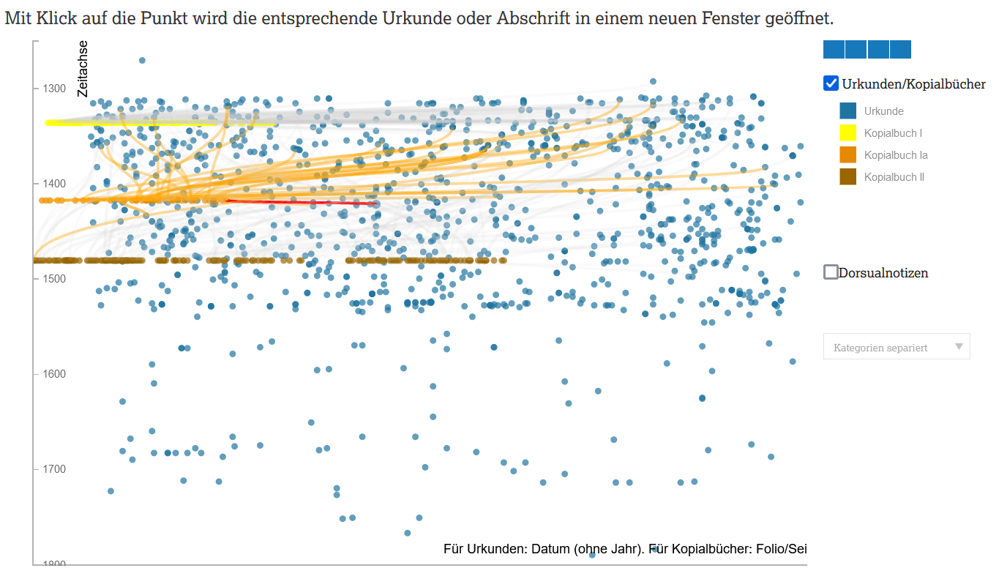
The idea behind the visualization is very interesting. It provides an overview of the temporal relationship between the cartularies and documents. However, there seem to be some issues as far as the implementation is concerned. The orange highlighting creates a messy ball of information, and it is quite difficult to select another related element. Clicking on one of the buttons under “Dorsualnotizen” on the right, such as “dors_2”, does not lead to any result. In my opinion, it would be advisable to implement the Mantra of Information Seeking (Shneiderman 1996, 336–343), namely, to filter the information space according to certain criteria, like the “dorsal layers“ and then jump into the details – the document itself.
Frequency and occurrence of “Dorsualnotizschichten“
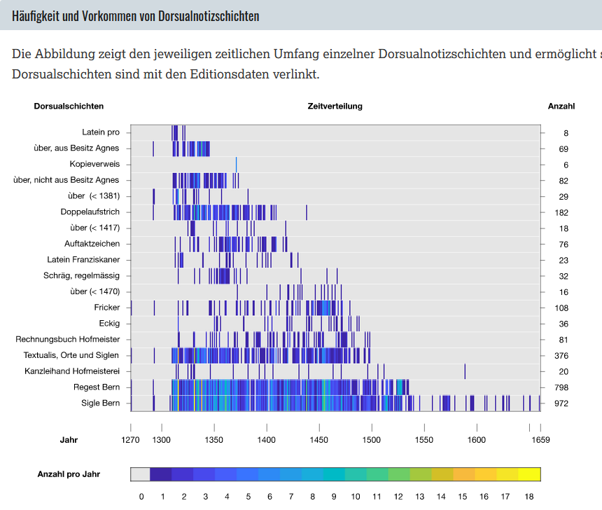
Network visualization of the “Dorsualschichten“
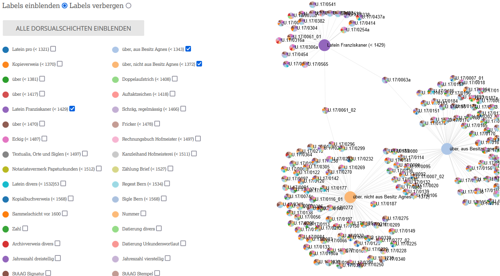
The idea is attractive, but again, there are some implementation issues. If you click on a label like “number”, it results in displaying a blank page. The colour key for the individual nodes is quite small and therefore difficult to identify. Also, the readability of the tooltips containing some relevant information is definitely improvable. In addition, the colours are too similar. For example, the shades of pink are not distinguishable when working with the visualization. The information space is limited to a certain selection size, which makes the visualization very confusing. However, with only a small selection of documents, it is possible to get useful visualizations.
Conclusion
The digital edition of Die Urkunden und Akten des Klosters und des Oberamts Königsfelden 1308–1662 keeps its promise to be a comprehensive, coherent collection of edited, historical documents of more than 1500 charters and records, that can be used for specific historical research. It includes digital facsimiles, metadata on materiality, annotated texts focused on the content of the sources, search options and indices. Reusability and long-term availability of the research data (XML/TEI) is enabled through a data dump on Zenodo.
All in all, this is a successful implementation of a digital edition, even if minor flaws remain. However, these shortcomings do not really limit the use of the resource as they relate to invalid HTML5 and TEI, accessibility, user interface issues, as well as not entirely perfect but very interesting visualizations. Nor do these minor insufficiencies diminish the achievement of compiling and providing (almost) FAIR-compliant research data. The only real issue I notice is the loading time of certain web pages and search queries. From my experience, I dare to say that with maybe 2-3 months more project time, these minor issues and maybe also the loading time troubles could have been fixed.
Bibliography
- Halter-Pernet, Colette, Teuscher, Simon, Hodel, Tobias, Barwitzki, Lukas, Egloff, Salome, Henggeler, Fabian, Nadig, Michael, Steinmann, Anina, Stettler, Sabine, & Prada Ziegler, Ismail. 2021. Charters and Records of Königsfelden Abbey and Bailiwick (1308–1662) (1.0) [Data set]. Zenodo. https://doi.org/10.5281/zenodo.5179361.
- Hodel, Tobias. 2017. Königsfelden Abbey and Its First Cartulary: Dealing with Charters in the Fourteenth Century. In: Barret, Sébastien; Stutzmann, Dominique; Vogeler, Georg (Hg.) Ruling the script in the Middle Ages: formal aspects of written communication (books, charters, and inscriptions). Utrecht Studies in Medieval Literacy: Vol. 35 (S. 331–355). Turnhout: Brepols Publishers 10.1484/M.USML-EB.5.112441.
- Hodel, Tobias. 2020. Schriftordnungen im Wandel. Produktions-, Gebrauchs- und Aufbewahrungspraktiken von klösterlichem Schriftgut in Königsfelden (1300–1600). Spätmittelalterstudien: Vol. 7. Konstanz: UVK Verlagsgesellschaft 10.2357/9783739880600.
- Roland, Martin: Illuminierte Urkunden 1430-12-06_St-Gallen, In: Urkunden als offene Forschungsdaten. Langzeitarchivierung von Monasterium.net in GAMS, Graz 04.12.2020. https://web.archive.org/web/20230128145506/http://gams.uni-graz.at/o:cord.16312845.0c4e.36ad.ab54.5ebdb45e8513/TEI_SOURCE.
- Shneiderman, Ben. 1996. The Eyes Have It: A Task by Data Type Taxonomy for Information Visualizations. In: Proceedings of the IEEE Symposium on Visual Languages, Washington, 336–343.
- Stanley, Pablo. 2018. Designing for accessibility is not that hard. Inside Design Blog. https://web.archive.org/web/20230127071513/https://uxdesign.cc/designing-for-accessibility-is-not-that-hard-c04cc4779d94?gi=3816a0a5a7ad.
- Teuscher, Simon, Claudia Moddelmog. (2012). Einleitung in: Königsfelden: Königsmord, Kloster und Klinik. hier+ jetzt.
- Text Encoding Initiative, P5: Guidelines for Electronic Text Encoding and Interchange section ‘Representation of Primary Sources’, https://web.archive.org/web/20230127071329/https://www.tei-c.org/release/doc/tei-p5-doc/en/html/PH.html, accessed on the 10.08.2022.
- Vogeler, Georg. 2010 “Charters Encoding Initiative Overview,“ Digital Proceedings of the Lawrence J. Schoenberg Symposium on Manuscript Studies in the Digital Age: Vol. 2: Iss. 1, Article 8. https://web.archive.org/web/20230127071230/https://repository.upenn.edu/ljsproceedings/vol2/iss1/8/.
- Vogeler, Georg. 2018. Digital Diplomatics: The Evolution of a European Tradition or a Generic Concept? In: Cubelic, Simon, Michaels, Axel und Zotter, Astrid (eds.): Studies in Historical Documents from Nepal and India, Heidelberg: Heidelberg University Publishing, 2018. 85–109. 10.17885/heiup.331.454.
- Wilkinson, M., Dumontier M., Aalbersberg I. et al. (2016). “The FAIR Guiding Principles for scientific data management and stewardship”. Scientific Data 3, 160018. https://doi.org/10.1038/sdata.2016.18.
- Winslow, Sean M. 2019. Modelling charters in TEI P5: the TEI_CEI ODD. In: TEI 2019 Book of Abstracts. https://web.archive.org/web/20230127071110/https://gams.uni-graz.at/o:tei2019.132.
Notes
- Monasterium.net. https://web.archive.org/web/20230125124743/http://monasterium.net:8181/mom/home. ↑
- Description of the “Dorsualschichten”. https://web.archive.org/web/20230128142753/https://www.koenigsfelden.uzh.ch/exist/apps/ssrq/resources/images/Beschreibung_Do%20rsualschichten.pdf. ↑
- Possibly translated as “collection edition”; however, the term “archive edition” seems suitable. ↑
- AA/0680 Urkunden und Akten des Oberamtes Königsfelden 1314 -1797, 1314-1797 (Dossier). Web view of the inventory of the archival collection in the Aargau State Archives. https://web.archive.org/web/20230128142602/https://www.ag.ch/staatsarchiv/suche/detail.aspx?ID=201419. ↑
- Zenodo is an online storage service used for scientific datasets, among other things, and it is common practice to back up data there. https://web.archive.org/web/20230128143830/https://zenodo.org/. Halter-Pernet, Colette, Teuscher, Simon, Hodel, Tobias, Barwitzki, Lukas, Egloff, Salome, Henggeler, Fabian, Nadig, Michael, Steinmann, Anina, Stettler, Sabine, & Prada Ziegler, Ismail. (2021). Charters and Records of Königsfelden Abbey and Bailiwick (1308–1662) (1.0) [Data set]. Zenodo. https://doi.org/10.5281/zenodo.5179361. ↑
- International Image Interoperability Framework. https://web.archive.org/web/20230128144020/https://iiif.io/. ↑
- An open-source, web-based viewer for high-resolution zoomable images, implemented in pure JavaScript, for desktop and mobile. https://web.archive.org/web/20230128144119/https://openseadragon.github.io/. ↑
- Transkriptionsregeln deutschsprachiger Texte der Sammlung Schweizerischer Rechtsquellen (SSRQ), https://web.archive.org/web/20230128144244/https://www.ssrq-sds-fds.ch/wiki/Transkriptionsrichtlinien. ↑
- Datierungsrichtlinien, https://web.archive.org/web/20230128144353/https://www.ssrq-sds-fds.ch/wiki/Datierungsrichtlinien. ↑
- Transkriptionsrichtlinien und Auszeichnungspraxis, Editionsprojekt Königsfelden, https://web.archive.org/web/20230128144553/https://www.koenigsfelden.uzh.ch/exist/apps/ssrq/resources/images/TRL_Web.pdf. ↑
- The files examined were AA_0428_0002.xml, AA_0428_0138.xml and U-17_0009.xml from https://zenodo.org/record/5179361, accessed on the 07.08.2022. ↑
- att.global.rendition. P5: Guidelines for Electronic Text Encoding and Interchange. Version 4.4.0. https://web.archive.org/web/20230128145106/https://www.tei-c.org/release/doc/tei-p5-doc/en/html/ref-att.global.rendition.html, accessed on the 07.08.2022. ↑
- eXist-db is an open source NoSQL and native XML database built on XML technology. https://web.archive.org/web/20230128145923/http://exist-db.org/exist/apps/homepage/index.html. ↑
- https://wave.webaim.org. ↑
- https://validator.w3.org. ↑
- FAIR principles. GO FAIR. https://web.archive.org/web/20230128150113/https://www.go-fair.org/fair-principles/. ↑
- StAAG U.17/0887b. https://web.archive.org/web/20230128150317/https://www.koenigsfelden.uzh.ch/exist/apps/ssrq/docs/U-17_0887b.xml?odd=ssrq-norm.odd. ↑
- Roland S. Kamzelak and Lydia Michel, Marbacher Editionendatenbank. https://web.archive.org/web/20230128150534/https://www.dla-marbach.de/digital-humanities/editionen-db. ↑
- Greta Franzini, Catalogue of Digital Editions. https://web.archive.org/web/20230128150700/https://dig-ed-cat.acdh.oeaw.ac.at/. ↑
- Patrick Sahle, Scholarly Digital Editions. An annotated List. https://web.archive.org/web/20230128150844/https://www.digitale-edition.de/exist/apps/editions-browser/index.html. ↑
- Transkribus is a platform for the text recognition, image analysis and structure recognition of historical documents. https://web.archive.org/web/20230127071754/https://readcoop.eu/de/transkribus/. ↑
@article{koenigsfelden,
author = {Pollin, Christopher},
title = {A Review of the Königsfelden Online Edition},
journal = {RIDE – A review journal for digital editions and resources},
number = {16},
year = {2023},
doi = {10.18716/ride.a.16.5},
url = {https://doi.org/10.18716/ride.a.16.5},
}TY - JOUR
AU - Pollin, Christopher
TI - A Review of the Königsfelden Online Edition
T2 - RIDE – A review journal for digital editions and resources
IS - 16
PY - 2023
DA - 2023/03
DO - 10.18716/ride.a.16.5
UR - https://doi.org/10.18716/ride.a.16.5
PB - Institut für Dokumentologie und Editorik e.V.
LA - en
ER - Pollin, C. (2023). A Review of the Königsfelden Online Edition. RIDE – A review journal for digital editions and resources, (16). https://doi.org/10.18716/ride.a.16.5Pollin, Christopher. "A Review of the Königsfelden Online Edition." RIDE – A review journal for digital editions and resources, no. 16, 2023. https://doi.org/10.18716/ride.a.16.5.Pollin, Christopher. "A Review of the Königsfelden Online Edition." RIDE – A review journal for digital editions and resources, no. 16 (2023). https://doi.org/10.18716/ride.a.16.5.